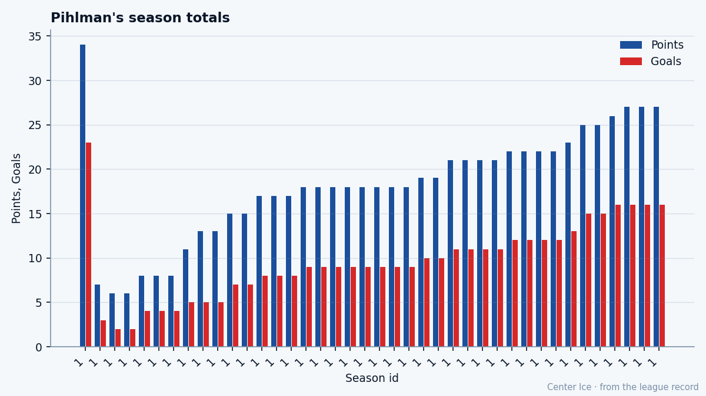

Tuomo Pihlman, at 21: a Calder, a 76, and a ceiling the Bureau set 19 grades below his base
The 9th pick of 2004 scored 23 goals and won the Calder last season. The Development Index has him 4 above his current grade and the Book says he peaked.
 Tomáš VránaProfile writer · The Sweater
Tomáš VránaProfile writer · The SweaterThe Bureau gave Tuomo Pihlman78 a potential of 57. He is currently playing at 76, with 4 more on the Development Index, which puts his form 23 grades above what the Book says he is capable of becoming. He won the Calder Trophy last season with 23 goals and 34 points. He is 21 years old.
Pihlman played 73 games as a rookie at 12.7 minutes a night and finished with 34 points on a Minnesota club that went 28-39-15 and missed the playoffs. He scored 23 times. He did not lead the team in scoring. He did not finish in the top three. He was the best rookie in the league anyway, and the trophy is in his apartment, and the Bureau still thinks 57 is where he belongs.
A player at 76 is a regular. A player at 57 is the 57th-best attribute on a third-line forward's card. The Bureau set that number when it graded him, presumably before or shortly after the 2004 draft, and it has not moved. His base grade is 76. The Index says +4. The potential sits at 57 and nothing has touched it.
What the attributes say about the gap
The card explains why the model missed him. Pihlman's top grades are SHPW 85, TOUG 85, BALA 84, CHKG 83. He is short-handed, tough, balanced, and he checks. His speed reads 76. His puck handling is 81. His passing is 72. Those are not the numbers that make a Calder winner in the way a prospect evaluator typically projects one.
His bottom grades are PRES 50, FIGH 51, SPBI 52, FACE 53. He has no composure under pressure and he will not fight you. The faceoffs go against him, and the breakout pass is not his game. The Bureau's potential model, which rewards speed and hands and vision, looked at this 204-pound left winger from the 9th slot of the 2004 draft and said: ceiling 57.

What the model did not price was the combination of 85 short-handed play, 85 toughness, 84 balance, 83 checking, 81 agility, 81 puck handling, 81 short-handed endurance. That is not a skill forward. That is a body on a line with  Saku Koivu84 that creates space and takes the puck to the net and does not stop moving for 73 games. The Bureau grades what it can measure against its own framework, and Pihlman is good at the things outside the framework.
Saku Koivu84 that creates space and takes the puck to the net and does not stop moving for 73 games. The Bureau grades what it can measure against its own framework, and Pihlman is good at the things outside the framework.
The contract and the room
He is on $1.05M with 2 years left. His morale reads 90, which is the same number the Lady Byng winner reads. He has played 3 games this season, picked up 3 assists, logged 14.3 minutes a night, and is now on injured reserve with an ankle that the league dates somewhere between October 13 and October 15. He returns October 22, four days from now. He will not play in Sunday's game against Dallas.
The room around him at  Minnesota Wild includes
Minnesota Wild includes  Manny Fernandez92 at 90 between the pipes, Koivu at 84 down the middle,
Manny Fernandez92 at 90 between the pipes, Koivu at 84 down the middle,  Wes Walz84 at 82, Pierre-Marc Bouchard81 at 79, and
Wes Walz84 at 82, Pierre-Marc Bouchard81 at 79, and  Richard Park79 at 77 on the right side. Minnesota is 3-1-0 through four games, ninth in the Northwest, scoring 9 and allowing 8. The wins came against
Richard Park79 at 77 on the right side. Minnesota is 3-1-0 through four games, ninth in the Northwest, scoring 9 and allowing 8. The wins came against  San Jose Sharks and
San Jose Sharks and  Florida Panthers. The losses came against
Florida Panthers. The losses came against  Boston Bruins and
Boston Bruins and  Dallas Stars.
Dallas Stars.
A man at 21 with a trophy in his apartment and a grade of 76 on the card does not read like a man the Bureau thinks will decline. Morale 90 says he is not bothered. The $1.05M says nobody else is bothered either. Minnesota has him for 2 more seasons at a salary that sits in the bottom quartile of every roster in the league.
The road that is not on the sheet
There is no background on record. No city, no junior team, no draft combine interview, no CHL stat line. The record opens on December 1, 2004 and Pihlman is already in Minnesota, already wearing number 7, already on the second line with a coach who trusts him at 12.7 minutes. He has been with the club since before the record knows about. The desk has no road to trace, no family story, no minor hockey anecdote. What exists is 73 games of 23 goals and a Calder and a potential grade of 57 that nobody at the Bureau has touched since they wrote it down.
What the Index does next
The Development Index is +4 right now. That means his form sits 4 grades above his base of 76. If the ankle keeps him out past his return date, if the 3 points become 3 points in 5 games and then a cold streak, the Index slides. A cold streak with a base of 76 and a potential of 57 does not change the base. The Bureau will not revise 57 downward; it is already below him. It might revise it upward if he sustains what he showed in 2003-04 for another full season, but the Book has been patient for 18 months and the number has not moved.
What he showed last season, at 20 years old, at 12.7 minutes a night, against full NHL schedules, was 23 goals. The 9th overall pick of 2004 scored 23 times in his first year and won the Calder and the Bureau looked at his speed of 76 and his hands of 81 and his composure of 50 and said: that is not what a ceiling of 80 looks like.
They may be right that he will not sustain it. They may be wrong about what sustainment looks like for a man whose game is built on toughness and short-handed play rather than speed and vision. The trade deadline is 152 days away. If Minnesota slides, a 21-year-old with 34 points in a season and 2 years left at $1.05M becomes a trade piece. The room says he does not seem to mind.